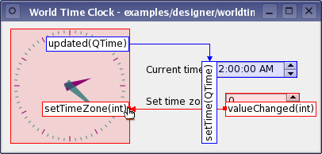

| Home · All Classes · Main Classes · Grouped Classes · Modules · Functions |
[Previous: Using a Component in Your Application] [Contents] [Next: Creating Custom Widget Extensions]
Qt Designer's plugin-based architecture allows user-defined and third party custom widgets to be edited in the same way as standard Qt widgets. All the features of the custom widgets are made available to Qt Designer, including widget properties, signals, and slots. Since Qt Designer uses real widgets during the form design process, custom widgets will appear the same as they do when previewed.

The ability to create custom widgets in Qt Designer is one of the features provided by the QtDesigner module.
The process of integrating an existing custom widget with Qt Designer usually just requires a suitable description for the widget and an appropriate project file.
To inform Qt Designer about the type of widget we want to provide, we must create a subclass of QDesignerCustomWidgetInterface that describes the various properties it exposes. Most of these are supplied by functions that are pure virtual in the base class because it only makes sense for the author of the plugin to provide this information.
| Function | Description of the return value |
|---|---|
| name() | The name of the class that provides the widget. |
| group() | The group in Qt Designer's widget box that the widget belongs to. |
| toolTip() | A short description to help users identify the widget in Qt Designer. |
| whatsThis() | A longer description of the widget for users of Qt Designer. |
| includeFile() | The header file that must be included in applications that use this widget. This information is stored in .ui files and will be used by uic to create a suitable #includes statement in the code it generates for the form containing the custom widget. |
| icon() | An icon that can be used to represent the widget in Qt Designer's widget box. |
| isContainer() | True if the widget will be used to hold child widgets; otherwise false. |
| createWidget() | A QWidget pointer to an instance of the custom widget, constructed with the parent supplied. |
| domXml() | A description of the widget's properties, such as its object name, size hint, and other standard QWidget properties. |
| codeTemplate() | The default code to be used to construct and set up the widget in uic-generated files. |
Two other virtual functions can also be reimplemented:
| initialize() | Sets up extensions and other features for custom widgets. Custom container extensions (see QDesignerContainerExtension) and task menu extensions (see QDesignerTaskMenuExtenstion) should be set up in this function. |
| isInitialized() | Returns true if the widget has been initialized; otherwise returns false. Reimplementations usually check whether the initialize() function has been called and return the result of this test. |
If the custom widget does not provide a reasonable size hint, it is necessary to specify a default geometry in the string returned by the domXml() function in your subclass. For example, the AnalogClockPlugin provided by the Custom Widget example, defines a default widgetgeometry in the following way:
...
" <property name=\"geometry\">\n"
" <rect>\n"
" <x>0</x>\n"
" <y>0</y>\n"
" <width>100</width>\n"
" <height>100</height>\n"
" </rect>\n"
" </property>\n"
...
An additional feature of the domXml() function is that, if it returns an empty string, the widget will not be installed in Qt Designer's widget box, but it can still be used by other widgets in the form. This feature is used to hide widgets that should not be explicitly created by the user, but which are required by other widgets.
Some custom widgets have special user interface features that may make them behave differently to many of the standard widgets found in Qt Designer. Specifically, if a custom widget grabs the keyboard as a result of a call to QWidget::grabKeyboard(), the operation of Qt Designer will be affected.
To give custom widgets special behavior in Qt Designer, provide an implementation of the initialize() function to configure the widget construction process for Qt Designer specific behavior. This function will be called for the first time before any calls to createWidget() and could perhaps set an internal flag that can be tested later when Qt Designer calls the plugin's createWidget() function.
The project file for a plugin must specify the headers and sources for both the custom widget and the plugin interface. Typically, the project file only needs to specify that the plugin's project is to be built as a library, but with specific plugin support for Qt Designer. This is done with the following declarations:
CONFIG += designer plugin debug_and_release
TEMPLATE = lib
It is also useful for testing purposes to ensure that the plugin is installed alongside the other Qt Designer widget plugins:
DESTDIR = $$QT_BUILD_TREE/plugins/designer
When Qt is configured to build in both debug and release modes, Qt Designer will be built in release mode. When this occurs, it is necessary to ensure that plugins are also built in release mode. To do this, include the following declaration in the plugin's project file:
CONFIG += release
If plugins are built in a mode that is incompatible with Qt Designer, they won't be loaded and installed. For more information about plugins, see the Plugins HOWTO document.
Please see the Custom Widget Plugin and World Time Clock Plugin examples for more information about using custom widgets in Qt Designer.
[Previous: Using a Component in Your Application] [Contents] [Next: Creating Custom Widget Extensions]
| Copyright © 2005 Trolltech | Trademarks | Qt 4.1.0 |